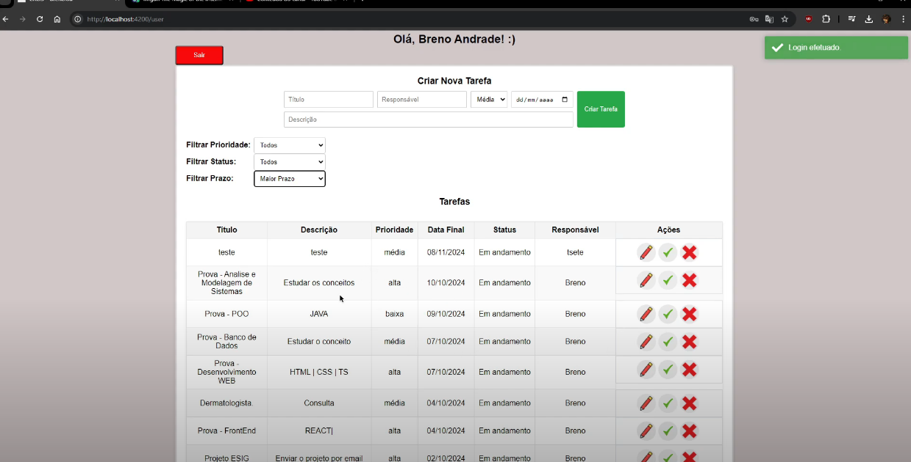

Projeto Full Stack - Aplicação de Gerenciamento de Tarefas
Este projeto é uma aplicação full stack para gerenciamento de tarefas, composta por um front-end em Angular e um back-end em Spring Boot, com PostgreSQL como banco de dados. O sistema implementa autenticação de usuários com token JWT, garantindo segurança e controle sobre os dados.
Demonstração do Projeto- Funcionalidades:
- Autenticação JWT e registro de usuários
- CRUD completo de tarefas com filtros avançados
- Banco de dados PostgreSQL
Tecnologias Utilizadas:
Front-end: Angular
Back-end: Java 11, Spring Boot, JWT, JPA, PostgreSQL

Projeto Flappy Bird em Java
O projeto Flappy Bird é um jogo desenvolvido em Java, recriando o famoso jogo Flappy Bird. Ele utiliza conceitos de lógica de programação, controle de colisão e movimentação de objetos para criar uma experiência de jogo envolvente.
- Funcionalidades:
- Movimentação do personagem com controle de velocidade
- Controle de colisões e pontuação
- Sistema de reinicialização do jogo
Tecnologias Utilizadas:
Desenvolvimento: Java e biblioteca gráfica Swing para a interface